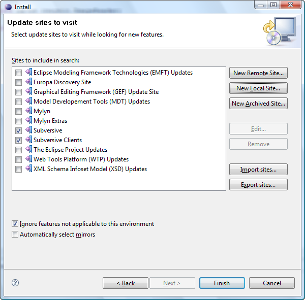
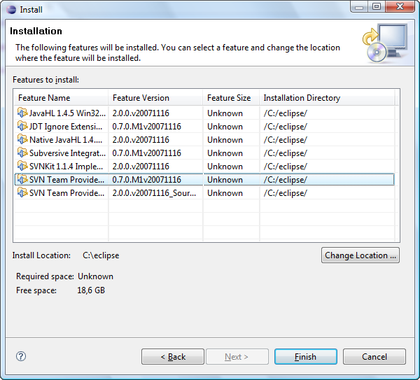
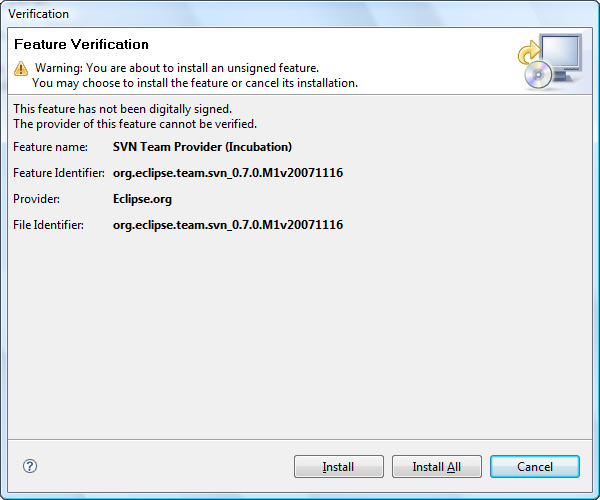
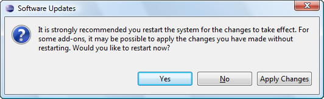

Subversive update instructions (Polarion.org version installed)
Subversive can be simply installed from within Eclipse using update manager. All what the user should do is just point update manager to the remote or local update site. Please note that if you want to save your workspace settings related to SVN you shouldn't uninstall this version before updating to the Eclipse one. To update Subversive:
-
Start Eclipse and select menu item 'Help > Software Updates > Find and Install...'

-
In the 'Install/Update' wizard select 'Search for new features to install' option and click on the 'Next' button.
-
The 'Install' dialog shows a list of available update sites. Subversive has its own update site, so you need to add it to the list. You are provided a probability to install either from remote or local update site. Installation from remote update site is preferred, because the user just have to refer the site URL. If the user has downloaded local update site distribution as ZIP archive, he should refer it as local update site location.
Click on the 'New Remote Site...' button to add Subversive update site.
-
On the 'New Update Site' dialog enter the name of update site and the URL. Use following values:
Click on the 'OK' button to store update site information.

Also you should install Subversive SVN Connectors to allow the plug-in work with Subversion. You can do the following in such a simple way:
On the 'New Update Site' dialog enter the name of clients' update site and the URL. Use following values:
-
Name: Subversive SVN Connectors
-
URL: The proper URL can be found on http://www.eclipse.org/subversive/downloads.php
-
Please note that the use of the software you are about to access may be subject to third party terms and conditions and you are responsible for abiding by such terms and conditions.
Click on the 'OK' button to store update site information.
-
To start features search in the list of the update sites the user should select 'Subversive' and click on the 'Finish' button.

-
Update manager checks update site and shows the list of available features.
Select the features to be updated and click on the 'Next >' button.

-
Accept terms of license agreement and click on the 'Next >' button.

-
Click on the 'Finish' button in order to start the download of selected features.

-
Click on the 'Install All' button in order to confirm installation of downloaded features.

-
To apply installation changes and restart Eclipse click on the 'Yes' button.

-
After Eclipse restart you should click on 'Help > Subversive > Migrate Projects and Settings' menu item for all workspaces which SVN settings should be saved. Then you are able to start using the updated version of Subversive.

Please note, that it is highly recommended to uninstall the Polarion.org version of Subversive only after performing the steps described above to avoid feather compatibility problems.